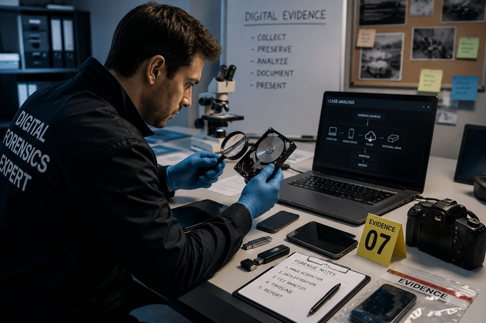

- Imagine a company's computer system gets hacked and important information disappeared.
- The company wants to find out who did it and what happened.
- Someone carefully examines computers, phones, emails, and digital records for clues.
- The person who collects and studies this digital evidence is called a Digital Forensics Expert.
- 👉 In simple words: Digital Forensics Experts investigate cyber crimes and find digital evidence from computers and devices.
Digital Forensics Expert
🧑🎨 What Do They Do?

🎓 How to Become a Digital Forensics Expert
These beginner-level courses help students learn computer systems, digital investigations, cyber security basics, and how digital evidence is collected and analyzed.
Diploma in Cyber Forensics and Information Security
Duration: 3 Years
Eligibility: Class 10 Pass
Entrance Exam: Polytechnic Entrance Exam / Merit-Based Admission
Certificate in Cyber Forensics & Evidence Analysis
Duration: 3–6 Months
Eligibility: Class 10 Pass
Entrance Exam: Direct Admission / Merit-Based Admission
Diploma in Computer Science Engineering
Duration: 3 Years
Eligibility: Class 10 Pass
Entrance Exam: Polytechnic Entrance Exam / Merit-Based Admission
📝 Exam Details
(Click on the exam name to see full details)
Polytechnic Entrance Exam Merit-Based AdmissionNote: Many Digital Forensics Experts improve their skills by learning computer systems, cyber security, digital investigations, and methods used to collect and analyze digital evidence.
These degree programs help students learn digital investigations, cyber crime analysis, computer forensics, data recovery, and methods used to collect digital evidence.
B.Sc in Cyber Forensics / Digital Forensics
Duration: 3–4 Years
Eligibility: 10+2 Pass (Science Stream with Mathematics or Computer Science Preferred)
Entrance Exam: AIFSET / University Entrance Exams
B.Tech in Computer Science Engineering (Digital Forensics & Cyber Crime)
Duration: 4 Years
Eligibility: 10+2 Pass (Physics, Chemistry, and Mathematics)
Entrance Exam: JEE Main / State Engineering Entrance Exams
Bachelor of Computer Applications (BCA) in Data Security & Digital Forensics
Duration: 3 Years
Eligibility: 10+2 Pass (Any Stream)
Entrance Exam: CUET-UG / Merit-Based Admission
📝 Exam Details
(Click on the exam name to see full details)
AIFSET JEE Main State Engineering Entrance Exams CUET-UG Merit-Based AdmissionNote: Digital Forensics Experts often strengthen their skills by learning cyber crime investigation, evidence collection, operating systems, networking, and digital forensic tools used by law enforcement and security teams.
Students who complete a diploma can join directly into the second year of selected degree programs through lateral entry.
B.Tech Lateral Entry (Computer Forensics / Information Security)
Duration: 3 Years
Eligibility: Diploma in Engineering (CSE, IT, or Cyber Forensics)
Entrance Exam: State Lateral Entry Exams (ECET, JELET, etc.)
B.Tech Lateral Entry in Cyber Security & Digital Forensics
Duration: 3 Years
Eligibility: Diploma in Computer Science, IT, or Cyber Security
Entrance Exam: State Lateral Entry Exams / University Entrance Exams
BCA (Lateral Entry) in Information Security & Digital Investigation
Duration: 2–3 Years
Eligibility: Relevant Diploma Qualification
Entrance Exam: Merit-Based Admission / University Rules
📝 Exam Details
(Click on the exam name to see full details)
State Lateral Entry Exams University Entrance Exams Merit-Based AdmissionNote: Lateral entry students can specialize in digital forensics, cyber investigations, information security, and digital evidence analysis while completing their degree faster.
These advanced programs help graduates specialize in cyber crime investigation, digital evidence analysis, forensic tools, and legal procedures related to digital crimes.
M.Sc in Digital Forensics and Cyber Crime Investigation
Duration: 2 Years
Eligibility: Graduate (BSc Forensic Science, BSc CS, BCA, or B.Tech)
Exam: NFSU Entrance Exam / CUET-PG
M.Tech in Cyber Forensics and Information Security
Duration: 2 Years
Eligibility: Graduate (B.Tech/B.E. in CSE/IT or MCA)
Exam: GATE / University Entrance Exams
Advanced Post Graduate Diploma in Cyber Law and Digital Evidence Analysis
Duration: 1 Year
Eligibility: Graduate (Technical, Science, or Law Background)
Exam: Direct Admission / Merit-Based Admission
📝 Exam Details
(Click on the exam name to see full details)
NFSU Entrance Exam CUET-PG GATE University Entrance Exams Merit-Based AdmissionNote: Advanced studies help Digital Forensics Experts work on cyber crime investigations, digital evidence recovery, malware analysis, and forensic research for law enforcement and security organizations.
Note:
(Age limits, marks, and admission process may vary depending on the college or state. These courses are available in many colleges and universities across India. You can choose colleges based on your location, budget, and entrance exams.)
🏛️ Top Colleges for Digital Forensics
(Tap on a college to view the details)
After 10th Pass (Diplomas & Digital Forensics Foundations)
Government Polytechnic College, Mumbai Sanjay Gandhi Polytechnic, Ballari Lovely Professional University (LPU), Phagwara Government Polytechnic, Hyderabad Thanthai Periyar Government Institute of Technology (Polytechnic), VelloreAfter 12th Pass (Bachelor's Degrees)
National Forensic Sciences University (NFSU), Gandhinagar Indian Institute of Technology (IIT) Delhi, New Delhi Birla Institute of Technology and Science (BITS), Pilani Chandigarh University, Mohali University of Madras, ChennaiAfter Diploma (Lateral Entry)
Delhi Technological University (DTU), New Delhi Anna University, Chennai Jadavpur University, Kolkata PSG College of Technology, Coimbatore Netaji Subhas University of Technology (NSUT), New DelhiAfter Graduation (Master's Degrees & Advanced Digital Forensics Research)
National Forensic Sciences University (NFSU), Delhi & Bhopal Campuses Indian Institute of Technology (IIT) Kharagpur, Kharagpur National Institute of Technology (NIT), Tiruchirappalli Amity University, Noida Banaras Hindu University (BHU), VaranasiSTEP 1
Imagine you are a Digital Forensics Expert.
STEP 2
Your job is to investigate cyber crimes and find digital evidence.
STEP 3
You examine computers, mobile phones, emails, and other digital devices.
STEP 4
You look for clues to understand what happened and who was involved.
STEP 5
You prepare reports that can help companies or police solve the case.
STEP 6
If you enjoy computers, solving mysteries, and finding clues, this career may suit you.
Where do Digital Forensics Experts work? (Job Roles + Growth)
These are some roles you can explore in Digital Forensics and Cyber Crime Investigation.
You usually start with beginner roles and grow with experience.
🟢 Beginner Roles
💾
Cyber Forensics Associate
(After Short-Term Certification / Diploma)
Preserves digital evidence and copies data from seized devices.
📁
Digital Evidence Custodian
(After Diploma / BCA / B.Tech)
Maintains evidence records and follows legal handling procedures.
📱
Mobile Forensics Assistant
(After Diploma / Graduation)
Extracts data from smartphones and helps analyze digital evidence.
🖥️
Computer Forensics Technician
(After Computer Forensics Training)
Recovers deleted files and examines computer storage devices.
🔵 Mid-Level Roles
🔍
Digital Forensics Examiner
(After BCA / B.Tech + Experience)
Investigates devices and recovers hidden or deleted evidence.
🚨
Incident Response Analyst
(After BCA / B.Tech + Certification)
Investigates cyber attacks and traces attacker activities.
⚖️
Cyber Crime Investigator
(After Digital Forensics Training + Experience)
Collects evidence and supports cyber crime investigations.
🔐
Malware Forensics Analyst
(After Security & Malware Analysis Training)
Studies malicious software and discovers how attacks occurred.
🟣 Advanced Roles
🎓
Digital Forensics Expert / Consultant
(After MCA / M.Tech + Experience)
Presents evidence reports and provides expert forensic advice.
🏛️
Forensic Investigation Manager
(After Leadership Experience)
Leads teams handling major cyber crime investigations.
👨💼
Director of Cyber Crime Investigation
(After Senior Leadership Experience)
Oversees large-scale digital forensics and cyber crime operations.
🔍
Digital Forensics Companies
Investigate cyber crimes and recover digital evidence from devices.
⚖️
Law Enforcement Agencies
Analyze digital evidence to support criminal investigations.
🏦
Banking & Financial Companies
Investigate fraud cases and trace suspicious digital activities.
🛡️
Cybersecurity Companies
Examine cyber attacks and identify how security breaches occurred.
⚕️
Government & Intelligence Agencies
Investigate cyber threats and protect national digital infrastructure.
🌍
Remote Digital Forensics Jobs
Analyze digital evidence and support investigations worldwide.
(Click Yes or No for each question)
1. Have you ever heard of hackers stealing information online?
2. Have you ever wondered how investigators find digital clues from computers, phones, or online accounts after a cybercrime happens?
3. Are you interested in solving cybercrime cases?
4. When something goes wrong, do you like finding out what happened?
5. Imagine you are investigating a cybercrime. You examine computers and phones, find digital evidence, and discover who hacked the system. Does this excite you?